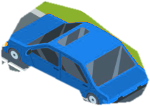

Managing Traffic Flow
Traffic on public thoroughfares is regulated by an absolute legal chain of authority. When electronic indications, permanent physical signposts, and human traffic directors are in conflict, Texas law establishes clear preemptive hierarchy.
Interactive Controller
Select Level to InspectHierarchy of Traffic Control
Select a statutory tier below to modulate the intersection scenario and test your legal duty of obedience under Texas law.
Automated electric signals establish the standard baseline order of intersection traffic. An operator facing a steady circular red signal alone shall stop at a clearly marked stop line.



Under Texas law, drivers must halt their vehicle prior to the nearest transverse stop line or before entering the crosswalk. Ready to test what happens when authorities intervene?